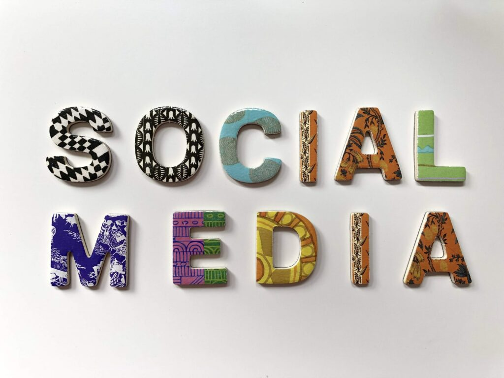

Author – Michelle Lagos CEO
Marketers typically are community-minded people. We collaborate across multiple departments in our own companies, as well as various communities locally/nationally/internationally, while keeping track of competitive players and ensuring we’re deeply connected to the needs and goals of our clients. Because that’s so – We’re paying attention and want to give you an idea of important themes and trends that are happening in marketing in 2021. There’s going to be new ways of communicating your brand, services, and business model. Step on the NEW wave and let us help you with that growth. Contact us at Info@GetLagosNow.com.
- Things are going to be MORE empathetic than ever. It’s going to be common and important to incorporate that messaging within you’re own company/team but also share it out globally – so it’s clear that you’re a company or organization that’s working towards a better future together. Those messages being sent out should focus on the care and welfare of the clients, the team, and the community both locally and globally. Being very clear that everything isn’t about a making a quick buck with quick service solutions.
- Although there was an explosion of virtual events last year and most everyone has virtual burnout, there’s still going to be a place for these kinds of events, after in-person ones resume, but it will be important to monitor the frequency, length, and how engaging they truly are. An emphasis will be also be placed on how viewers are connected with before, during, and after the event.
- People are looking for more human interactions and are now more interested in discussions and panels in which they can ask questions, be a part of the action and offer their own expertise. That’s not something you could do when watching someone on-stage or in long webinars. You will see an increase in 2021/2022 interactivity events – online or offline.
Continue To Grow
Digital Marketing will continue to grow – Bridget Perry, CMO at Contentful, predicts: “We’ve found a digital innovation gap between what customers demand and what brands are currently capable of delivering. That’s why digital leaders across industries tell us they plan to spend, on average, 25% more on digital in 2021. And 25% is just the average — some plan to spend significantly more. CMOs who aren’t scaling up their digital spending will soon be outpaced by competitors.
“Melissa Sargeant, CMO of Litmus, says: “In the coming year, many marketers will experience budget cuts but, by doing this, companies are setting themselves up for failure. During an economic downturn, companies that pull back and starve marketing efforts, do not perform well. And, when our consumerism-driven environment re-engages, those brands will be further behind than they were when they made those budget-conscious decisions.”
“Ultimately, the pandemic has accelerated trends in business. Look at digital transformation and work from home initiatives, for example. But, if there were cracks within a business’s model beforehand, the pandemic brought those to light so now is the time for them to fix it, not bury it. Businesses have to position themselves the best they can now in order to come out even stronger in the end. And, it requires a mature, advanced multi-channel strategy with experienced marketers.”
We’ll see an acceleration with the digital-first shift
Auseh Britt, VP, Growth Marketing at Terminus “We saw an acceleration in the shift to digital in 2020, mainly due to the gap left by live events. Substitutes like virtual conferences lacked the ability to really engage audiences, making them glorified webinars – exacerbating the ‘Zoom’ fatigue.”
“I see this trend continuing in 2021 as we look for more creative ways to engage customers and prospects through hyper-personalized outreach, high impact direct mail, intimate and interactive virtual experiences, and relevant educational content.”
Content marketing will start with conversations.
“The content marketing playbook we’ve been using is at least two decades old. Marketers are still focusing on keyword-heavy blog posts as the main tactic to captivate their audience. But it’s a strategy made for Google, not for people.”
“Today, your audience wants to have an authentic experience with your brand and the best way to do that is by leading with conversations.”
“As marketers aim to create a more human-centric experience, we will see more content pulled from actual conversations with people in the industry who can provide that genuine interaction today’s consumers are looking for,” Lindsay Tjepkema, CEO of Casted, told me.
In 2021, it’s all about people, people, people.
Caroline Tien-Spalding, CMO at Aptology, says: “Marketing’s north star will be evolving in 2021. Marketing has always been about understanding people and acting on that knowledge. A key difference in 2021 is that marketers are able to know more than ever. It’s the rise of the psychologist, and the rise of the digital marketer.”